Forsyningskæde
Vi bestræber os efter at producere den bedste kvalitet te til dig og dine nærmeste.
Vores temarker i Indien, Sri Lanka og Indonesien er nøje udvalgt ud fra kvalitet, arbejdsvilkår og klima.
Vores teplanter gror i minds 8 måneder, før bladene bliver plukket. Dette sikrer at bladene har modnet og udviklet sig til fulde, som resulterer i kraftigere smag.
Hvert batch af te bliver kvalitetstjekket under pakningen inden den bliver sendt til Europa, hvor den så bliver distribueret ud til dit supermarked.
